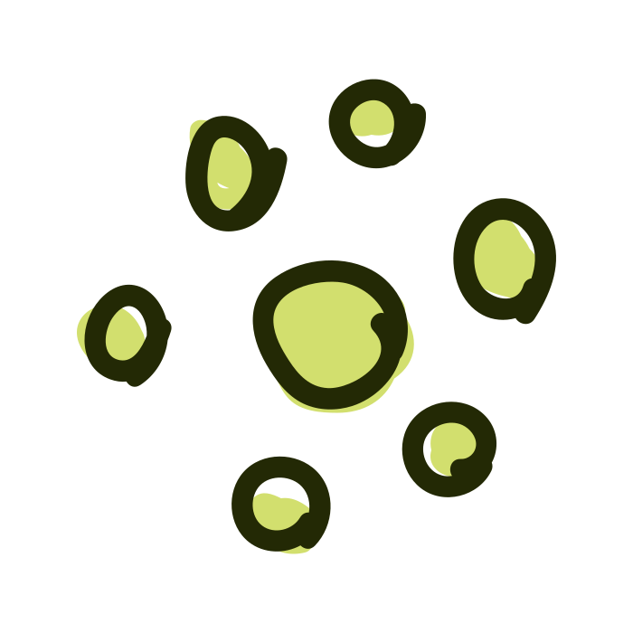

Yr er enkel
Vi reduserer kompleksiteten i tjenesten ved å velge etablerte mønstre og konvensjoner for informasjonsdesign og interaksjon.

Vi reduserer kompleksiteten i tjenesten ved å velge etablerte mønstre og konvensjoner for informasjonsdesign og interaksjon.